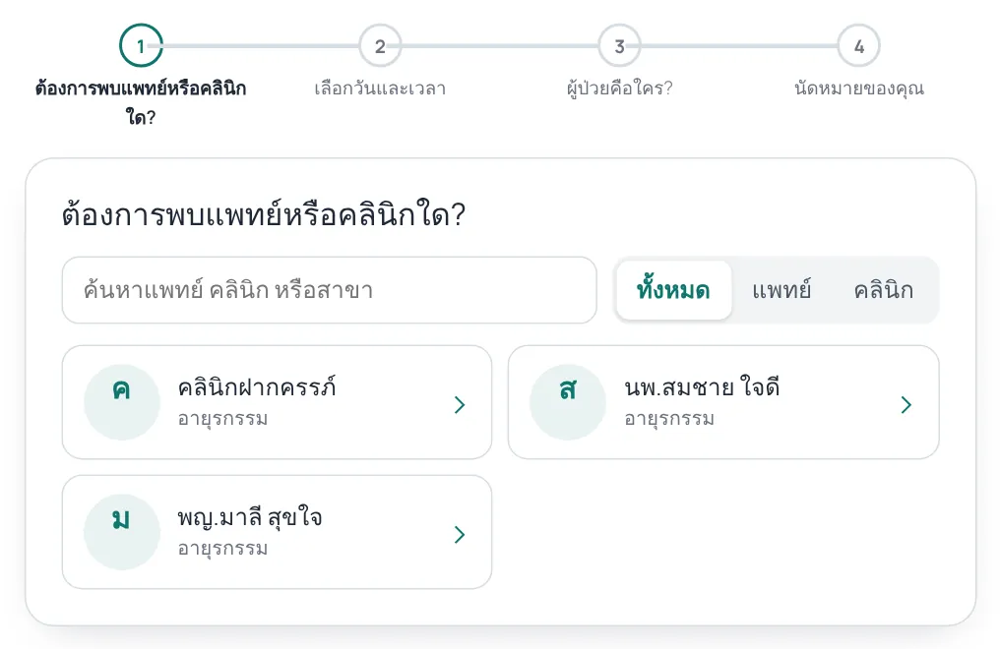
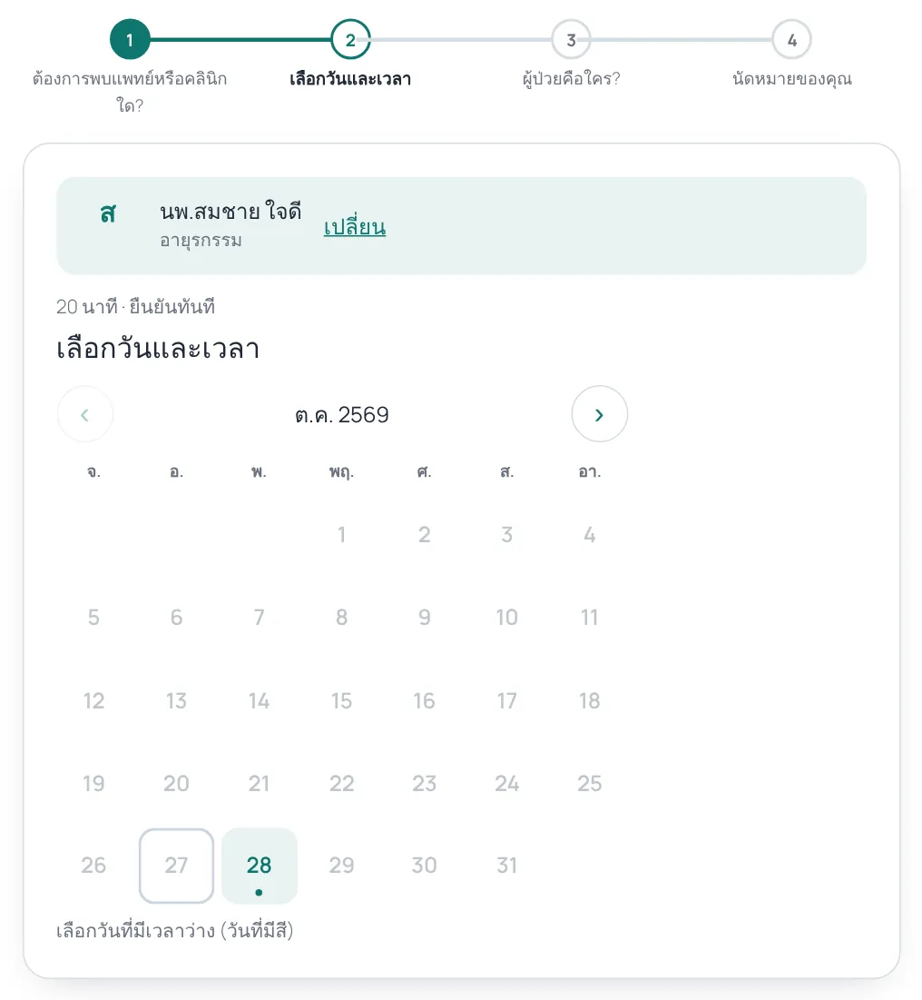
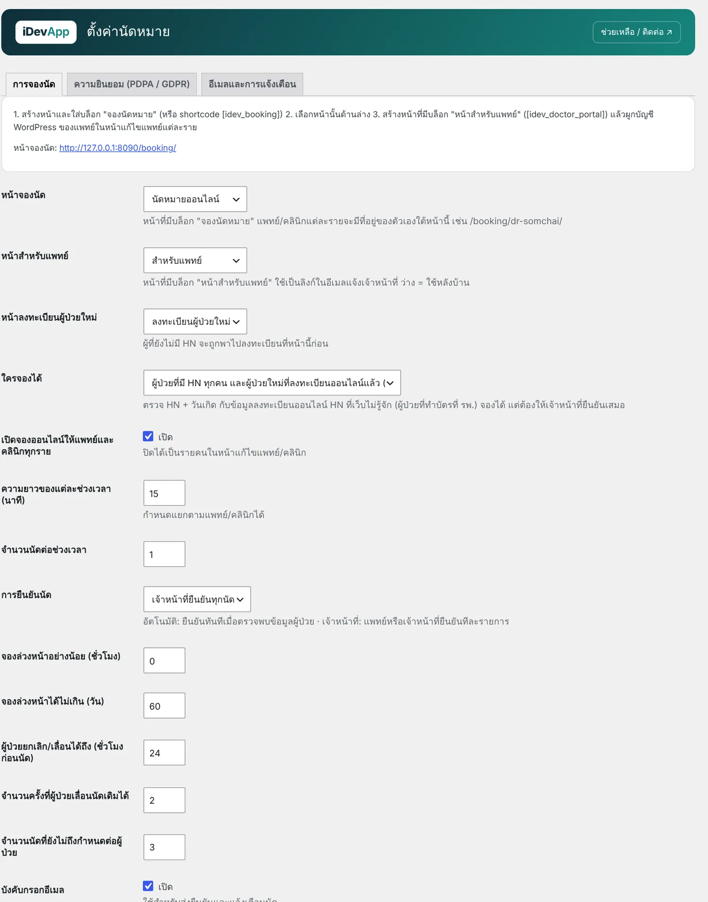
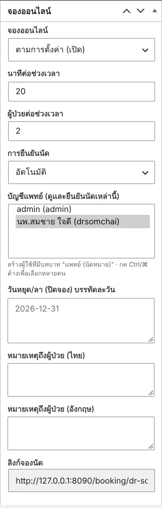
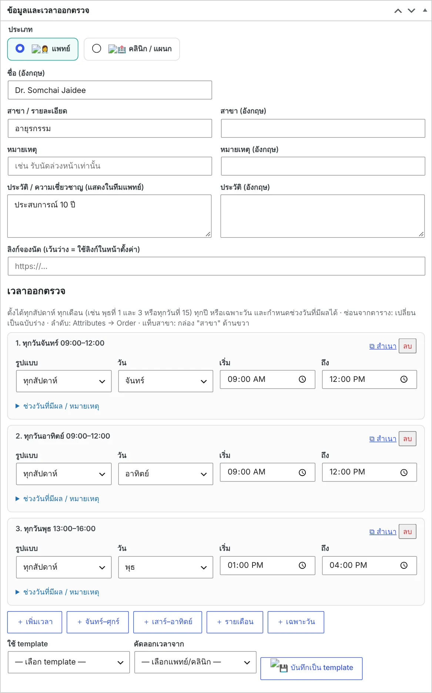
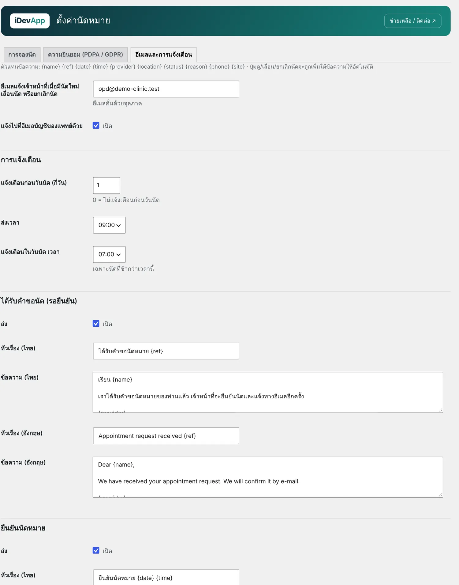
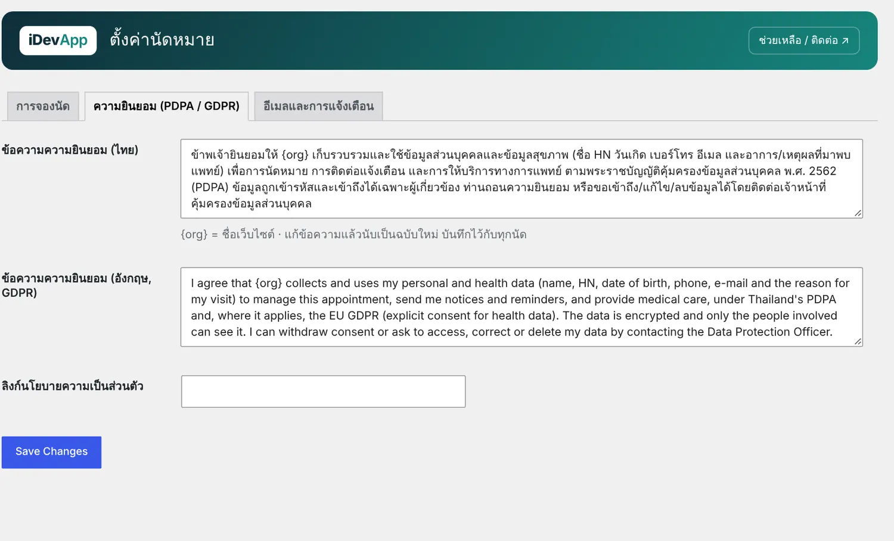
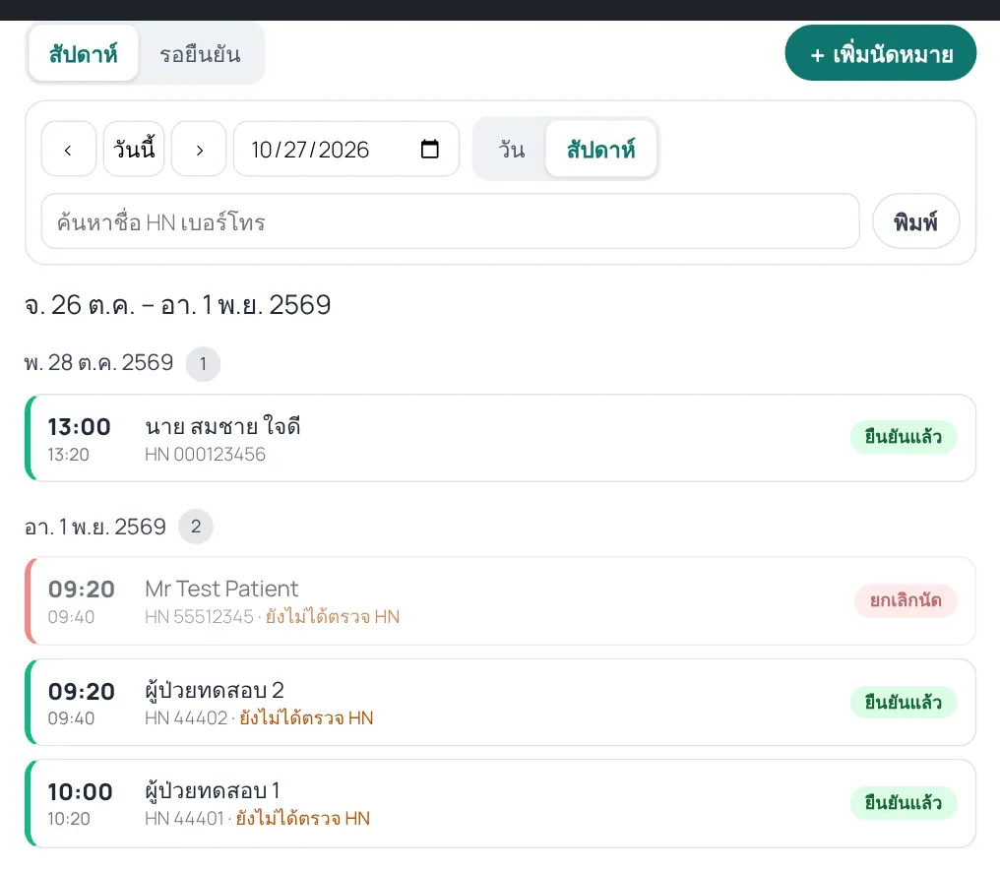
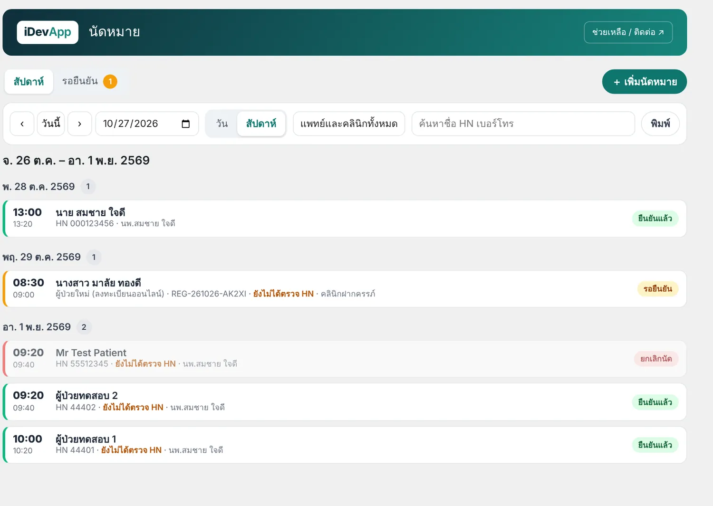

1ความสามารถ
ผู้ป่วยจองได้ 4 ขั้น: เลือกแพทย์หรือคลินิก → เลือกวันและเวลา → ยืนยันตัวตนผู้ป่วยและยอมรับ PDPA → ได้เลขที่นัดพร้อมลิงก์จัดการนัด


- ลิงก์จองแยกของแต่ละแพทย์/คลินิก เช่น
/booking/dr-somchai/ส่งต่อทาง LINE หรือพิมพ์เป็น QR ได้ - ช่วงเวลา (slot) สร้างจากเวลาออกตรวจใน iDev Clinic Schedule กำหนดความยาวช่วงและจำนวนนัดต่อช่วงได้ทั้งแบบรวมและรายแพทย์
- ข้ามวันหยุดที่ปิดคลินิก (iDev Thai Holidays) และวันลาของแพทย์ให้อัตโนมัติ
- ผู้ป่วยที่ยังไม่มี HN ต้องลงทะเบียนก่อน ระบบพาไปหน้าลงทะเบียนผู้ป่วยใหม่ แล้วกลับมาจองต่อ
- ต้องยอมรับ PDPA / GDPR ก่อนจองทุกครั้ง และบันทึกฉบับความยินยอมไว้กับทุกนัด
- ยืนยันอัตโนมัติ หรือให้แพทย์/เจ้าหน้าที่ยืนยัน ตั้งรวมหรือแยกรายแพทย์ได้
- อีเมล 6 แบบ: ได้รับคำขอ ยืนยันนัด แจ้งก่อนวันนัด แจ้งในวันนัด ยกเลิก เลื่อนนัด แก้ข้อความได้ทั้งไทยและอังกฤษ
- ผู้ป่วย ยกเลิกหรือเลื่อนนัด เองจากลิงก์ในอีเมล กำหนดเวลาสุดท้ายที่เปลี่ยนได้และจำนวนครั้งที่เลื่อนได้ · เพิ่มลงปฏิทินมือถือ (.ics)
- หน้าสำหรับแพทย์ ดูตารางนัดของตัวเองแบบวัน/สัปดาห์ ยืนยัน เลื่อน ยกเลิก บันทึกว่ามาหรือไม่มา
- ข้อมูลผู้ป่วยในนัดถูกเข้ารหัสในฐานข้อมูล
2ฟรีและ Pro
| ฟรี | Pro 3,900 บาท (ตลอดชีพ) | |
|---|---|---|
| แพทย์/คลินิกที่เปิดจองออนไลน์ | ไม่จำกัด | ไม่จำกัด |
| จำนวนนัด · อีเมลยืนยันและเตือนนัด · หน้าสำหรับแพทย์ | ครบ ไม่จำกัด | ครบ ไม่จำกัด |
| แจ้งเตือนทาง LINE Official Account และ SMS (ThaiBulkSMS หรือ webhook) | — | ✓ |
| รายชื่อรอคิว — นัดเต็ม ผู้ป่วยลงชื่อไว้ มีคนยกเลิกแล้วแจ้งให้จองทันที | — | ✓ |
| หลายสาขา — หน้าจองแยกสาขา ที่อยู่/เบอร์สาขาในข้อความ เจ้าหน้าที่เห็นเฉพาะสาขาตัวเอง | — | ✓ |
| รายงาน — อัตราไม่มาตามนัด/ยกเลิก แยกแพทย์และสาขา วัน/ช่วงเวลาที่นัดมาก พิมพ์และส่งออก CSV | — | ✓ |
| WhatsApp — ปุ่มแชตให้เจ้าหน้าที่ส่งข้อความที่เตรียมไว้ และส่งอัตโนมัติผ่าน WhatsApp Cloud API (Meta) | — | ✓ |
| ออกแบบอีเมล 6 แบบ (ได้รับคำขอ ยืนยัน เตือนก่อนวันนัด วันนัด ยกเลิก เลื่อน) แม่แบบ 3 แบบ ใส่โลโก้ สี ตัวอย่างสด ส่งทดสอบ | อีเมลแบบพื้นฐาน | ✓ |
| ออกแบบรายงานที่พิมพ์ คลาสสิก / ทันสมัย / ทางการ | — | ✓ |
| ตัวเชื่อม HOSxP — ส่งนัดที่ยืนยันแล้วไปตารางนัด (oapp) ของ HOSxP (ทางเลือก) | — | ✓ |
| ใช้กับ | — | 1 เว็บไซต์ ไม่มีค่ารายปี · ทดลองใช้ฟรี 14 วัน |
ติดตั้งไฟล์เดียว: zip ของ iDev Appointments Pro มีตัวฟรีอยู่ในตัวแล้ว ถ้าเคยติดตั้งตัวฟรีไว้ ตัว Pro จะปิดตัวฟรีให้เอง ข้อมูลเดิมอยู่ครบ เมนูอยู่ที่ นัดหมาย › รายงานและ Pro รวมอยู่ใน I-Clinic / I-Drug แล้ว และ License ของ iDev Appointments ที่ออกก่อนเวอร์ชัน 1.2 ใช้กับ Pro ได้เลย
ตัวเชื่อม HOSxP เป็น เครื่องมือทางเลือก การเชื่อมต่อและเขียนข้อมูลลงฐานข้อมูล HOSxP ต้องได้รับอนุญาตจาก BMS (ผู้พัฒนา HOSxP) และโรงพยาบาล โรงพยาบาลเป็นผู้ตัดสินใจใช้ กำหนดตาราง/คอลัมน์ ทดสอบโหมด dry-run และตรวจข้อมูลใน HOSxP เอง อยู่นอกเหนือความรับผิดชอบของ iDevApp ต้องติ๊กยอมรับในแท็บ HOSxP ก่อนจึงจะเปิดใช้ได้
ค่า SMS เรียกเก็บโดยผู้ให้บริการ SMS ของโรงพยาบาลเอง · LINE ใช้ Messaging API ของ LINE OA ผู้ป่วยเพิ่มเพื่อนแล้วพิมพ์เลขที่นัดเพื่อรับแจ้งเตือน
วิธีซื้อและใส่ license ดูที่ ราคาและวิธีซื้อ License
3เริ่มต้นใช้งาน
ต้องติดตั้งและเปิดใช้ iDev Clinic Schedule ก่อน เพราะรายชื่อแพทย์และเวลาออกตรวจมาจากปลั๊กอินนั้น
- สร้างหน้าจองนัด
Pages → Add New ตั้งชื่อ เช่น "นัดหมายออนไลน์" (slug แนะนำ
booking) แล้วเพิ่มบล็อก จองนัดหมาย จากหมวด iDevApp หรือพิมพ์[idev_booking] - สร้างหน้าสำหรับแพทย์
สร้างอีกหน้า เช่น "สำหรับแพทย์" ใส่บล็อก หน้าสำหรับแพทย์ หรือ
[idev_doctor_portal]แพทย์เข้าหน้านี้แล้วล็อกอินด้วยบัญชี WordPress ของตัวเอง - ตั้งค่าการจอง
ไปที่ นัดหมาย › ตั้งค่า แท็บ การจองนัด เลือกหน้าจองนัด หน้าสำหรับแพทย์ และหน้าลงทะเบียนผู้ป่วยใหม่ แล้วกำหนดค่าตามตารางด้านล่าง

นัดหมาย › ตั้งค่า › การจองนัด - เปิดจองให้แพทย์แต่ละคน
เปิดหน้าแก้ไขแพทย์ใน แพทย์และคลินิก กล่อง จองออนไลน์ ทางขวา ตั้งเปิด/ปิด นาทีต่อช่วงเวลา ผู้ป่วยต่อช่วงเวลา วิธียืนยัน วันลา และหมายเหตุถึงผู้ป่วย ลิงก์จองของแพทย์คนนั้นอยู่ท้ายกล่อง

กล่อง "จองออนไลน์" ในหน้าแก้ไขแพทย์ 
เวลาออกตรวจ (จาก iDev Clinic Schedule) คือที่มาของ slot - สร้างบัญชีให้แพทย์
Users › Add New เลือกบทบาท แพทย์ (นัดหมาย) แล้วกลับไปที่หน้าแก้ไขแพทย์ เลือกบัญชีนี้ในช่อง บัญชีแพทย์ เจ้าหน้าที่ที่ดูแลนัดทุกแพทย์ใช้บทบาท เจ้าหน้าที่นัดหมาย
- ตั้งค่าอีเมลและการแจ้งเตือน
แท็บ อีเมลและการแจ้งเตือน ใส่อีเมลเจ้าหน้าที่ที่จะรับแจ้ง เลือกจำนวนวันที่แจ้งก่อนวันนัด เวลาส่ง และแก้หัวเรื่อง/ข้อความของอีเมลแต่ละแบบ

แท็บอีเมลและการแจ้งเตือน: เปิด/ปิด และแก้ข้อความอีเมลแต่ละแบบ ไทย/อังกฤษ
อีเมลแจ้งเตือนส่งโดย WP-Cron ทุกชั่วโมง ควรตั้ง cron จริงบน server และติดตั้งปลั๊กอิน SMTP เพื่อให้อีเมลส่งออกได้แน่นอน (ดูหัวข้อ "ปัญหาที่พบบ่อย")
4การตั้งค่าที่สำคัญ
| ตั้งค่า | ความหมาย |
|---|---|
| ใครจองได้ | ผู้ป่วยที่มี HN ทุกคน และผู้ป่วยใหม่ที่ลงทะเบียนออนไลน์แล้ว (แนะนำ) หรือ เฉพาะผู้ที่ลงทะเบียนออนไลน์แล้ว ระบบตรวจ HN + วันเกิดกับข้อมูลลงทะเบียน HN ที่เว็บไม่รู้จัก (ทำบัตรที่ รพ.) จองได้แต่ต้องให้เจ้าหน้าที่ยืนยันเสมอ |
| ความยาวของแต่ละช่วงเวลา | เช่น 20 นาที → คลินิก 09:00–12:00 มี 9 ช่วง กำหนดแยกรายแพทย์ได้ |
| จำนวนนัดต่อช่วงเวลา | เต็มแล้วผู้ป่วยเลือกไม่ได้ (เจ้าหน้าที่ยังเลือกได้ในหน้าสำหรับแพทย์) |
| การยืนยันนัด | อัตโนมัติ ยืนยันทันทีเมื่อตรวจพบข้อมูลผู้ป่วย · เจ้าหน้าที่ยืนยันทุกนัด |
| จองล่วงหน้าอย่างน้อย / ไม่เกิน | เช่น อย่างน้อย 2 ชั่วโมง ไม่เกิน 60 วัน |
| ผู้ป่วยยกเลิก/เลื่อนได้ถึง | จำนวนชั่วโมงก่อนนัด หลังจากนั้นต้องโทรติดต่อ |
| จำนวนครั้งที่เลื่อนได้ / นัดค้างต่อผู้ป่วย | กันการจองซ้ำซ้อน |
| สถานที่ / เบอร์โทรนัดหมาย | แสดงในหน้ายืนยันและในอีเมล |
| ความยินยอม (PDPA / GDPR) | ข้อความไทยและอังกฤษ {org} = ชื่อเว็บ แก้ข้อความแล้วนับเป็นฉบับใหม่ |

ตัวแทนข้อความในอีเมล
{name} {ref} {date} {time} {provider} {location} {status} {reason} {phone} {site} — ปุ่มดู/เลื่อน/ยกเลิกนัดถูกเพิ่มใต้ข้อความให้อัตโนมัติ
5หน้าสำหรับแพทย์และเจ้าหน้าที่
แพทย์เห็นเฉพาะนัดของตัวเอง เจ้าหน้าที่นัดหมายและผู้ดูแลเห็นทุกแพทย์ หน้าเดียวกันนี้อยู่ในหลังบ้านที่เมนู นัดหมาย ด้วย (มีตัวเลขนัดที่รอยืนยัน)


- มุมมอง วัน / สัปดาห์ / รอยืนยัน ค้นหาด้วยชื่อ HN หรือเบอร์โทร
- กดนัดเพื่อ ยืนยัน · เลื่อน · ยกเลิก · มาแล้ว · ไม่มาตามนัด พร้อมเหตุผลที่ส่งถึงผู้ป่วย และบันทึกภายใน
- ยืนยันทั้งหมดในรายการนี้ สำหรับยืนยันหลายนัดพร้อมกัน · พิมพ์ รายชื่อนัดประจำวัน
- เพิ่มนัดหมาย แทนผู้ป่วยที่โทรมา (เจ้าหน้าที่เลือกช่วงที่เต็มแล้วได้)
- นัดที่ HN ยังไม่ได้ตรวจหรือมาจากการลงทะเบียนออนไลน์จะมีป้ายกำกับให้เห็น
6บล็อกและ Shortcode
| บล็อก / Shortcode | ใช้ทำอะไร |
|---|---|
[idev_booking] | ฟอร์มจองนัด (บล็อก จองนัดหมาย) |
[idev_booking provider="12"] | จองเฉพาะแพทย์/คลินิก ID 12 (ข้ามขั้นเลือกแพทย์) |
[idev_booking kind="clinic"] | แสดงเฉพาะคลินิก (doctor = เฉพาะแพทย์) |
[idev_doctor_portal] | หน้าสำหรับแพทย์ (บล็อก หน้าสำหรับแพทย์) |
ปุ่ม จองนัด ในตารางออกตรวจ (iDev Clinic Schedule) และปุ่ม จองนัดหมายเลย หลังลงทะเบียนผู้ป่วยใหม่ (iDev Patient Registration) จะลิงก์มาที่หน้าจองนี้เอง
7ปัญหาที่พบบ่อย
อัปเดตจาก 1.1 แล้วต้องทำอะไร
ตั้งแต่ 1.2 ทุกแพทย์/คลินิกจองได้ฟรี ถ้าเคยซื้อ License ไว้ ให้ติดตั้ง iDev Appointments Pro เพิ่ม License เดิมจะเปิด LINE/SMS รายชื่อรอคิว สาขา รายงาน และตัวเชื่อม HOSxP
SMS / LINE ไม่ออก
ดูตาราง ข้อความล่าสุด ในแท็บ LINE / SMS จะบอกผลจากผู้ให้บริการ เช่น key ผิด เครดิตหมด หรือผู้ป่วยยังไม่ได้เชื่อม LINE ใช้ปุ่ม ส่ง SMS ทดสอบ ตรวจได้
เปิดใช้แล้วขึ้น "requires 1 plugin … idev-clinic-schedule"
ติดตั้งและกด Activate iDev Clinic Schedule ก่อน แล้วค่อยเปิด iDev Appointments (รุ่น 1.0.1 ขึ้นไปจะไม่บล็อกการเปิดใช้ แต่จะแสดงแถบเตือนแทน)
ปฏิทินไม่มีวันว่างเลย
- แพทย์ยังไม่มี เวลาออกตรวจ ใน iDev Clinic Schedule
- กล่อง จองออนไลน์ ของแพทย์ถูกปิด
- จองล่วงหน้าได้ไม่เกิน สั้นเกินไป หรือทุกช่วงเต็มแล้ว
ลิงก์ /booking/ชื่อแพทย์/ ขึ้น 404
ไปที่ Settings › Permalinks แล้วกด Save หนึ่งครั้ง เพื่อให้ WordPress สร้างลิงก์ใหม่ ถ้าชื่อแพทย์ (slug) เป็นภาษาไทย ระบบใช้ชื่อภาษาอังกฤษทำลิงก์
อีเมลไม่ออก / แจ้งเตือนไม่ตรงเวลา
ติดตั้งปลั๊กอิน SMTP แล้วทดสอบส่ง และตั้ง cron จริงบน server แทน WP-Cron:
*/15 * * * * curl -s https://example.com/wp-cron.php > /dev/null